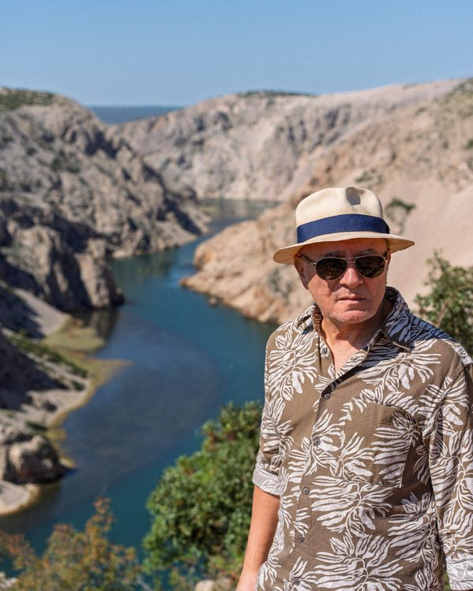

Anfragen
Für Anfragen, Buchungen und Informationen erreichen Sie uns unter

Wir verfügen über eigene, moderne Fahrzeuge und vermitteln darüber hinaus Fahrer sowie weitere Busse – für Reisen innerhalb Österreichs ebenso wie ins Ausland. Unsere Fahrzeuge bieten Platz für 20 bis 59 Fahrgäste.